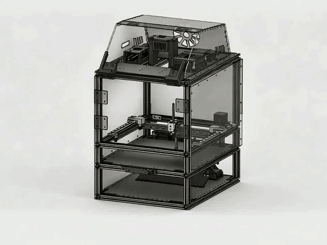

定位错误证据
视觉语言模型提供错误行或步骤的粗框，让批注有明确的语义关联。

01 / WORKFLOW
相机采集卷面，本地提取题目与作答区域。AI 返回反馈后，系统安排书写区域，并将批注转换为机械运动轨迹。
从真实答卷采集图像，保留题目与学生作答的空间关系。右侧为项目已有的同页处理示例。
批注在本地转换为笔画，经过合并与顺序优化，再生成 G-code 驱动书写机构。
02 / HARDWARE
模块化整机把进纸、平面书写与电控分层组织。边缘终端承担视觉处理和路径规划，控制器负责执行运动指令。
进纸机构、CoreXY 书写平台与顶层电控舱协同工作。模块化结构便于维护，也为视觉、运动控制和云端通信保留清晰的接口。
03 / CONNECTED EXPERIENCE
涂鸦 App 面板与本地 Web 控制台，让批改任务、设备状态和执行进度可以查看与追踪。
查看设备状态、批改进度与书写阶段，发起任务并获取执行反馈。首页运动动画与这张介绍页使用同源素材。
连接设备与批改任务，统一查看执行状态。
检测、批改、渲染与书写过程清晰呈现。
保留任务事件与失败信息，便于复核和排查。
Web 控制台串联卷面预览、AI 交互和书写控制，为本地操作与调试提供工作界面。
04 / RESEARCH IN PROGRESS
当前进一步研究错误证据与书写布局的关联：在保护原有内容、保持可读字号并考虑落笔误差的条件下，把批注放到更容易理解的位置。
视觉语言模型提供错误行或步骤的粗框，让批注有明确的语义关联。
筛除与原文冲突的位置，再依据错误距离和简单阅读规则安排短批注。
结合布局对照、关联评价与实体落笔实验，检验安全性和批注效果。
上述为正在推进的研究方向；页面中的已有流程示例不代表该研究已完成验证。